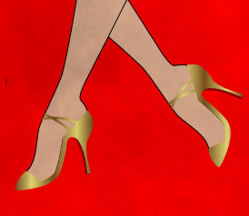

Unusual news stories from around the world.
Man in unusal airline incident.
”When I opened the door, he said he was bathing, and he asked me if I had some shampoo,” explained an airline attendant after she discovered a passenger taking a bath in the toilet. Passengers on the flight complained that the man was spending too much time in the toilet. An air attendant knocked on the door, and then noticed water coming out from underneath it. “We had to open the door with a key, and saw that the man was half naked,” she explained. In his defence, the passenger, John Walsing, said it was his first time on a plane. “I discovered the bathroom had hot water, so I thought of taking a bath, since I hadn't had one for a couple of days,” he explained. The airline could not punish or charge the man as there is nothing in the regulations to prohibit passengers from having a mid-flight bath. ✪
Australia runs into the record books.
The world record for the number of people running a race while wearing stilettos has been broken. A total of 265 competitors, including a few men, ran around an 80-metre track at Sydney's Circular Quay wearing 9-cm heels. The race was won by 400-metre professional hurdler Brittney McGlone. The 18-year-old took home £2,500, and a pair of gold stilettos. Some sprinters had to be treated for bruises, it was reported. Before the race, former Australian sprinter Melinda Gainsford-Taylor inspected the athletes and ensured they were wearing the mandatory 9-cm heels. “I don't think I've experienced such energy since my racing days,” she said. The new world record has topped the previous record of 150 participants, which was made in Holland. ✪
The rules on how to catch a bus.
Of course you know how to catch a bus. But if you ever need assistance, a leading British bus company has come up with a guide on how to catch one. The guide begins, “Using the bus could not be easier.” And continues, “Passengers should first decide what bus they need. Once the right bus has been spotted, with the number and destination on the front, one should then signal for the driver to stop. Wait until the bus is stopped and the doors are fully opened 46 and step on board. When you want to get off, press the bell once. For your safety we recommend you remain seated until the bus has arrived at the stop.” A spokesperson for the company said research had shown that many members of the public no longer know how to use public transport. “If we look back 30 or 40 years, catching a bus was part of our daily routine from when we were children. But that’s all changed now with so many cars on the road.” ✪